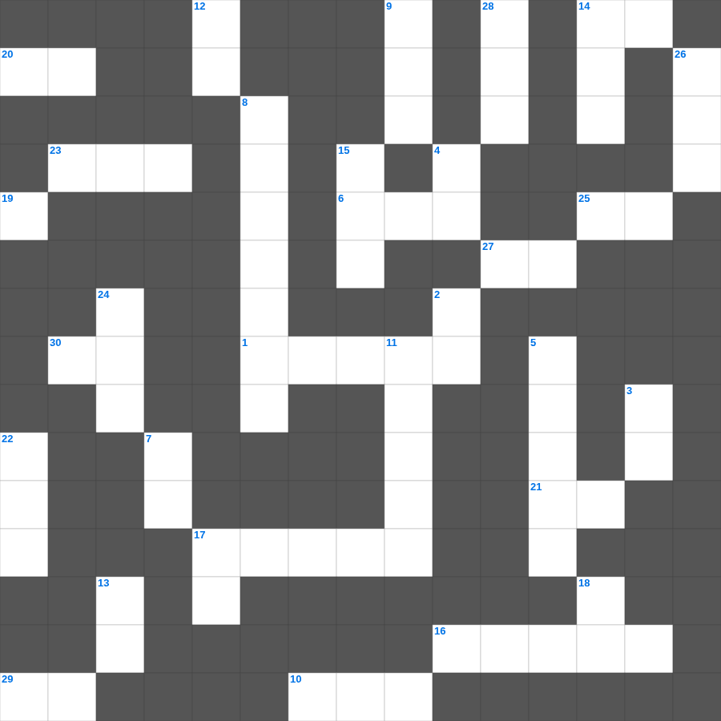

예수님의 열두 제자 (1)
📌 서비스 정의
십자가로세로는 교회 주보와 주일학교에서 사용할 수 있는 성경 기반 가로세로 퍼즐 서비스입니다. 성경 인물, 사건, 핵심 구절을 바탕으로 제작되었습니다. 온라인 풀이 및 인쇄 기능을 제공합니다.
예수님의의 말씀을 퀴즈로 배우는 예수님의 성경 퍼즐입니다. 가로 힌트와 세로 힌트를 보고 35개의 단어를 맞춰보세요. 인쇄도 가능하고 정답 확인도 바로 되니 소그룹 모임이나 가정 예배 시간에도 활용하실 수 있습니다.

📝 가로 힌트
1. 강도를 만난 자의 진정한 이웃
6. 하나님이 시내산에서 모세에게 주신 법
10. 이스라엘이 애굽을 탈출한 사건
14. 땅의 짐승과 기는 것(여섯째 날)
16. 열매 없는 이것나무를 예수님이 저주하심
17. 바울이 아덴(아테네)에서 복음을 전한 곳
20. 성경 인물 중 가장 장사(힘이 센 사람)는?
21. 주 예수의 이것이 모든 자들에게 있을지어다
23. 예수님이 기도하러 자주 가신 산
25. 나는 마음이 이것하고 겸손하니
27. 너희는 세상의 빛과 이것이라
29. 호흡이 있는 자마다 찬양하라 이것으로
30. 내가 곧 길이요 이것이요 생명이니
📝 세로 힌트
1. 여섯째 날 마지막에 만드신 존재
2. 땅 끝까지 이르러 내 이것이 되리라
3. 주 예수여 이것 오시옵소서
4. 새 이것을 너희에게 주노니
5. 탕자가 돌아왔을 때 아버지가 입혀준 것
7. 지성소와 성소를 나누는 두꺼운 천
8. 사도 바울의 자비량 사역 직업
9. 예수님이 세례받으실 때 성령이 이 모양으로 내려옴
11. 바울이 아테네에서 복음을 전한 언덕
12. 나 외에는 다른 이것들을 네게 두지 말라
13. 실로암 못에서 눈을 씻고 보게 된 사람
14. 알곡과 이것의 비유
15. 노아의 방주에 비가 내린 일수
15. 예수님이 광야에서 시험받으신 기간
17. 성경의 맨 마지막 단어
17. 이것들을 증언하신 이가 이르시되 내가 진실로 속히 오리라
18. 예수님이 첫 기적(물로 포도주)을 베푸신 곳
19. 첫 번째 재앙: 강물이 이것이 됨
22. 향을 피워 올리는 곳
24. 성경 인물 중 가장 키가 큰 사람은?
🧑🏫 교회 교육 자료 활용
이 퍼즐은 주일학교 교재 추천 자료로 활용할 수 있고, 주일학교 주보에 넣기 좋은 분량으로 구성되어 있습니다. 수업용 주일학교 교안에 활동지로 붙이거나, 예배 후 복습용 주일학교 공과교재로 바로 사용할 수 있습니다.
🏷️ 키워드
예수님의 성경 퍼즐, 예수님의, 십자가로세로, 성경퀴즈, 말씀퀴즈, 가로세로퍼즐, 주일학교 교재 추천, 주일학교 주보, 주일학교 교안, 주일학교 공과교재